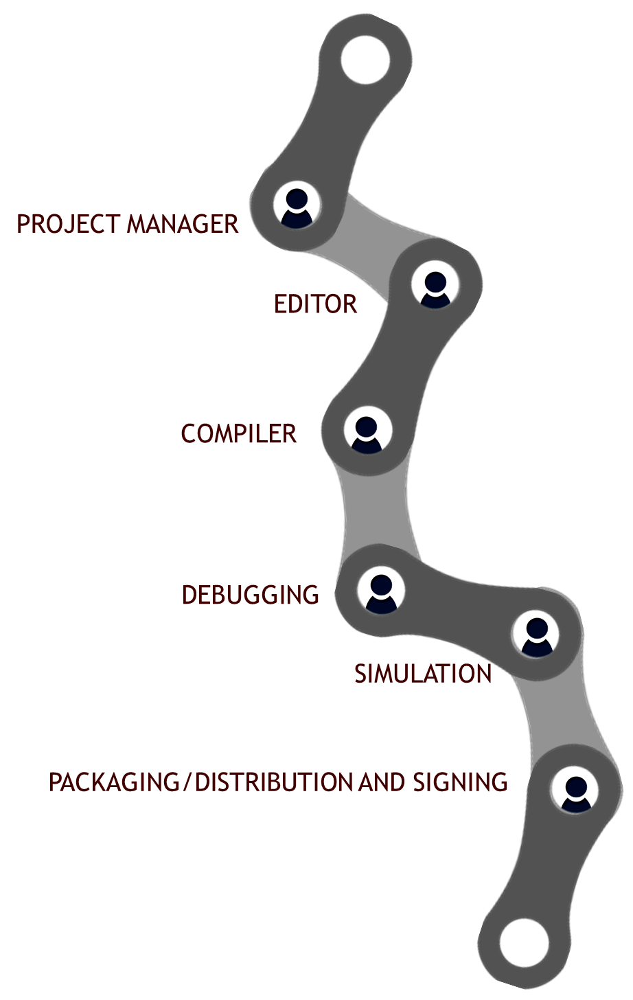
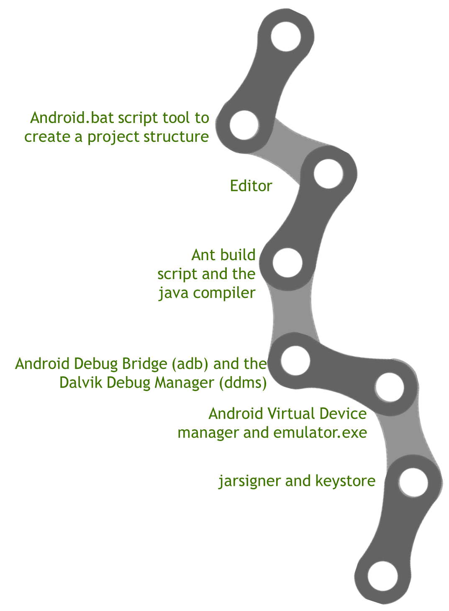
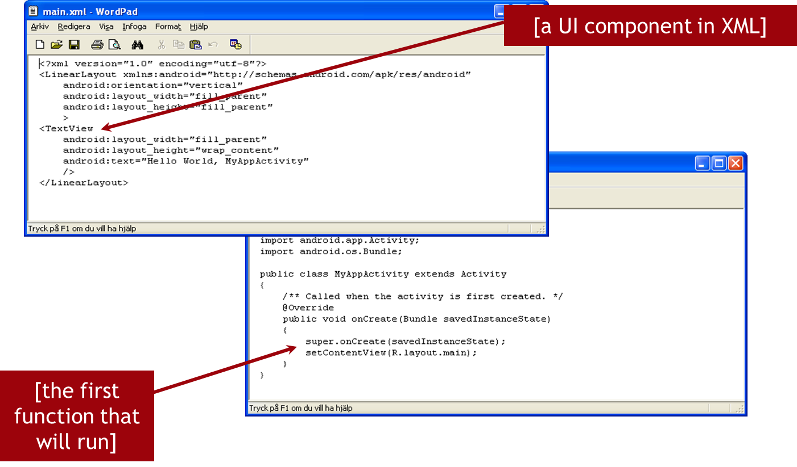
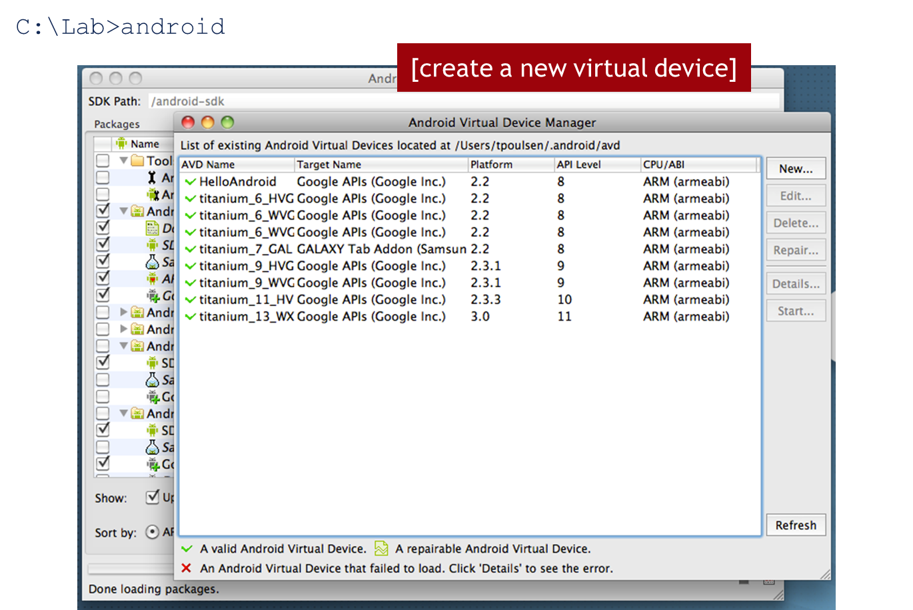
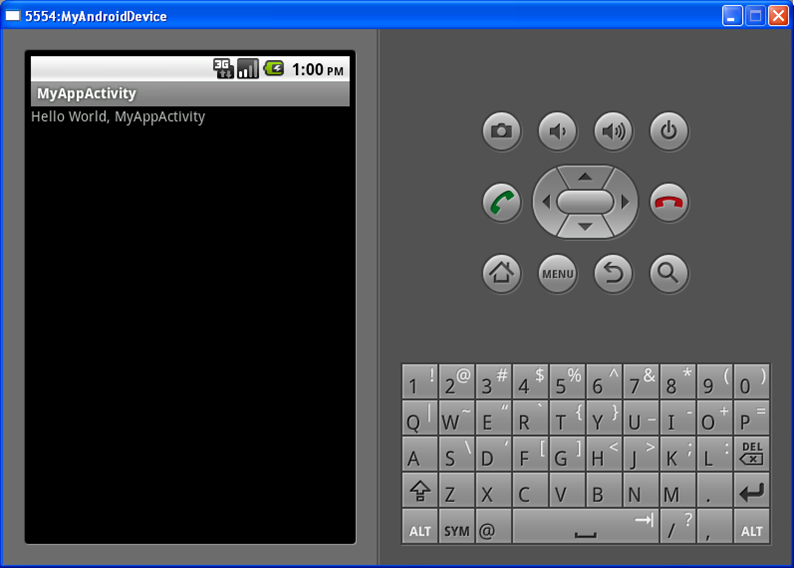
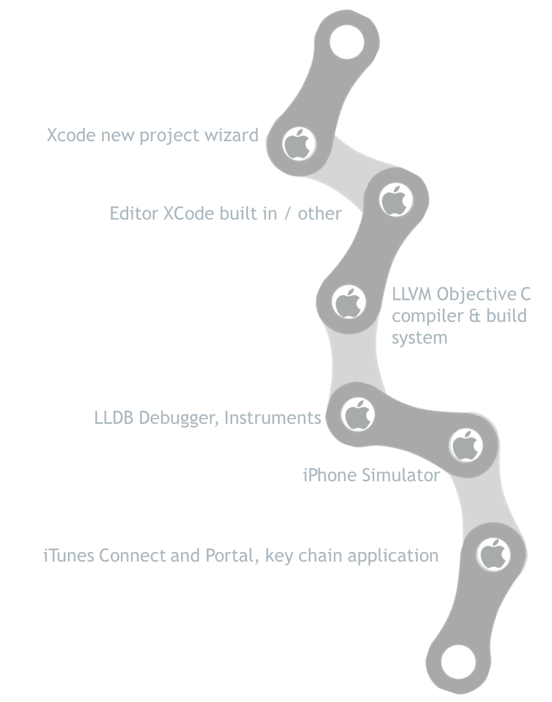
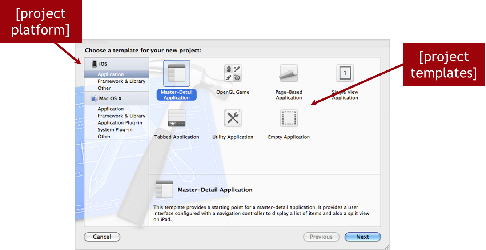
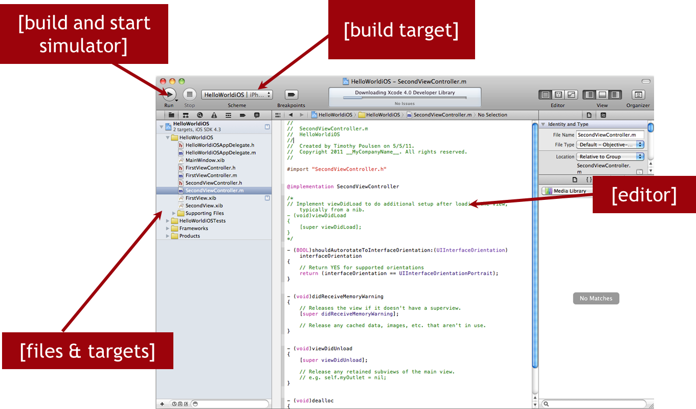
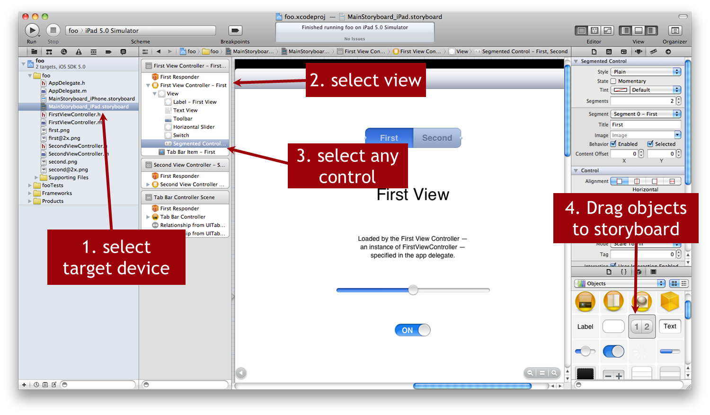
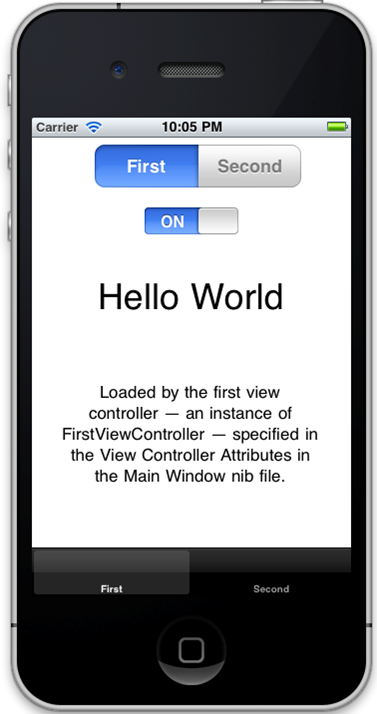

You're a Native App Developer Now
AGENDA
- Overview of a generic tool chain
- The Android tool chain and "Hello World!"
- The iPhone tool chain and "Hello World!"
- Titanium and the native SDKs
- Lab Exercise
Tool Chains - Everybody Has Them
DEFINITION
A tool chain is a set of executables/scripts that together form a work flow from code to distributed applications
A Generic Tool Chain

The Android Tool Chain

What's in the box?
Hello World
for the Android Native Tool Chain


Creating the Hello World Project Structure
C:\Lab> android create project
--target 8
--name MyAndroidApp
--path ./HelloWorldAndroid
--activity MyAppActivity
--package com.app.myandroid
Application starting point
How to build your hello world application
C:\Lab> ant debug
Creating a virtual device
Virtual Device Parameters
How to install your application to the target
C:\Lab> adb install bin/MyAndroidApp-debug.apk
Hello World application running
Dalvik Debug Monitor
The iPhone Tool Chain

What's in the box?
Hello World
for the iPhone Native Tool Chain


Create a new XCode project for iPhone
The XCode IDE tools
Storyboard Editor
Storyboard Editor, continued
Running your application on the simulator
Instruments
Titanium Studio and the SDKs
Titanium Studio relies on Python build scripts(mobile SDK)
Scripts interact with native tool chains
Titanium Mobile SDK requires and is dependent on these native tool chains
Will still need to use native tool chains (on occasion)
Q&A
Lab Objectives
- Create a native Android or iOS project
- Become familiar with the native tool chains